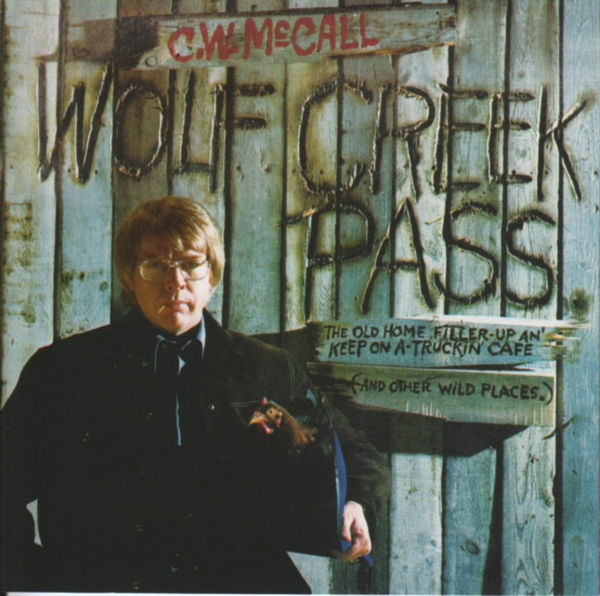
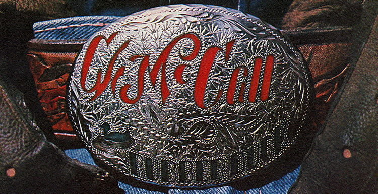
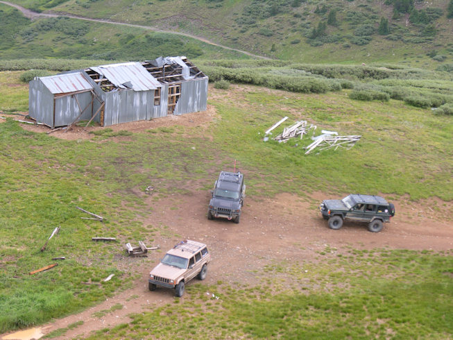

The Legend-News
What We Got Here
- Wolf Creek Pass: The Second Coming: An update on the “new” album from C.W. McCall.
- ’Round the Waist with the Rubber Duck: It’s a hold-up.
- C.W. Sightings: Duck season.
- New Critters On The Block: They’re in the net.
- Critters In the Wild: Bob Norton takes a break.
- Previously, in The Legend-News: An Interview with C.W. McCall from 2003
- Song A’ Th’ Month: “There Won’t Be No Country Music (There Won’t Be No Rock ’N’ Roll)”
Wolf Creek Pass: The Second Coming
The remastered, audio CD of Wolf Creek Pass was released on August 21. You can find it at Amazon for $17.99. It is ranked, as of today, as #29,679 on Amazon’s Best Sellers in Music. That’s a drop from its first ranking, when it reached a high of about #4,602; which is still not bad for a semi-greatest-hits collection from recordings over thirty years old.
The remastering of all of this album’s tracks is great; far better than what was done for the previous collections The Best of C.W. McCall and C.W. McCall’s Greatest Hits. But don’t trade away your other CDs! Only 11 of the tracks on this new Wolf Creek Pass appear on those other two CDs.
There is only one flaw that I’ve found with this album: on the inside back cover of the booklet is a credit “Thanks to: Ed Floden and Bill Fries”. Obviously, it should read “Thanks to Bill Fries and Ed Floden”; I know my place in the universe.

’Round the Waist with the Rubber Duck
Garry Jorgenson was the creator of the “Rubber Duck” belt buckle that appears on the cover of the album Rubber Duck; it also appears as the “home” image in the upper-left-hand corner of most pages on C.W. McCall: An American Legend. His son, Jason, informed me that his dad passed away on October 14, 2011.

C.W. Sightings
“CB lingo is a bit ‘smokey’ to teens”. There is also a “Convoy” board game, which I have; I’ll tell you about that next month.
New Critters On The Block
- Robert Greishaw, Jeffersonville, Indiana
- Troy Stokes, Austin, Texas
- Mary Knapp, Arizona
- Jeff Tobin, in an obscure band
- Eleanor Beidatsch, Albany, Western Australia
PFG Performance: full-service auto repair in Crystal Lake, Illinois.
Looking for real estate in northern Cook, Lake, Kane or McHenry Counties in Illinois? Ask Tony Bellino.
And if you need any painting or construction done in northern Illinois (and elsewhere), talk to Ivan at Diamond Painting Services ’n’ Construction.
Bloomfield to Baghdad, the latest novel from Tom Claffey.
American Spirit and The Real McCall: An American Storyteller, a two-album bundle from American Gramaphone.
Alan Chafin is selling books from his personal library.
The latest review on The Thinking Chick’s Guide: The Dark Knight Rises (2012).
Critters In the Wild
Bob Norton took a few days to drive around the San Juan Mountains.
Work has kept me from visiting Colorado San Juan Mountains much in recent years.
Still, I took the opportunity for a quick run recently. Arrived Thursday evening July 26th and had to return to New Mexico Sunday July 29th.
Two full days of trail runs near Silverton, Colorado at the Southwest Four Wheel Drive Association Summer Quarterly Meeting.
Revisited Animas Forks and ran Cinnamon Pass, plus other side trips. The following day, scouted several Gulches and side routes NE of Silverton.
It was wet, very, very wet! Yet, not enough to dampen my spirits to again breath free at 11,700 to 12,700 elevations again and again!
My white Jeep Cherokee that appears in older threads/articles has long ago worn out... my current ride is a gold '99 Jeep Cherokee.

Previously, in The Legend-News
From the 2003 July 28 issue of The Legend-News.
An Interview With C.W. McCall
Bill Fries, the real C.W. McCall, was interviewed by Cliff Abbott of Roehl Transport for the November 2002 edition of their CD newsletter, the Roehl News Network. (By the way, their name is pronounced “rail”.) Roehl News Network is a bi-monthly publication for their drivers; its contents include safety tips, information on trucking-related issues, and interviews with, and the music of, country performers.
Thanks to Cliff Abbott, who conducted the interview.
Roehl News Network: Bill Fries was an advertising writer in 1972 when he created a fictional television character to sell Old Home Bread. From those commercials sprang a legendary recording career, and a name familiar to truck drivers around the world.
In this edition of the Roehl News Network, we’re proud to have as our guest Bill Fries, who personified the character of C.W. McCall. Bill, how does a person go from an everyday job to a storybook career like you’ve had?
Bill Fries: Well, it’s a, it goes back to a lot of experiences that I’ve had, growing up as a little kid in southwest Iowa.
RNN: You began your career working in advertising, right?
BF: Yes, sir, I’m an old ad man. We started out that, the first commercials that we did for Metz Baking Company up in Sioux City, Iowa led to the creation of a character that I wrote for him to lip-sync the words to my lyrics in the commercials. And dog-gone if they didn’t take off and become really sensational around the Upper Midwest: you know, Nebraska, Iowa, South Dakota, and so on.
RNN: So how did this successful ad campaign turn into your career as a recording artist?
BF: The record companies heard this, and they said “Why don’t you make that into a record, and, you know, we’ll distribute it nationally.” So I said, “Hey, why not?” and suddenly my life was turned around, completely.
RNN: But that first album wasn’t your most popular, was it?
BF: We did another album for MGM Records, and on that record was a little thing called “Convoy”.
RNN: The big one.
BF: Yeah, it was a monster. I tell ya, there was a time when you could drive anywhere in the United States and plug in your radio — AM, FM, anything — and hear it.
RNN: How many copies did that album sell?
BF: It’s sold now around twenty million copies worldwide, and it’s been just a monster, you know, like you say.
RNN: And the song “Convoy” eventually led to a movie.
BF: Well, after the record was out, about two years later, MGM came to us and had an offer from a producer in Hollywood and said, “We’d like to use your song as the basis for a movie.” And we said, “That’s great! All we wanna do is write the music for it.” And so they did, and they put out this movie called “CONVOY” which was written by an unknown scriptwriter who really didn’t do the song justice. You know, I thought that it should a’ been a lot funnier than it was. But anyway, Kris Kristofferson and Ali McGraw were in it, and it did quite well around the world.
RNN: Let’s talk about your relationship with the trucking industry. How did you come to understand drivers the way you do?
BF: My dad was a trucker, and he used to haul flatbed semis all over the Midwest with prefabricated farm buildings on ’em. And I used to ride along as a kid; I learned a lot about trucks then, but I never, you know, got to be a truck driver. But I admire those guys out on the road, I’ll tell ya.
RNN: They have a difficult job, don’t they?
BF: They do.
RNN: Bill, do you know anyone who might have a message for our drivers?
BF: “Hi, there, this is C.W. McCall, and you’re tuned into the Roehl News Network, and I just wanna tell all you truckers out there to remind ya to put on your safety first in everything you do. Ya hear? Now listen up!”
RNN: We sure appreciate your call, Bill.
BF: All right! Thank you now.
RNN: Here’s another C.W. McCall classic you might remember.
(“Wolf Creek Pass” is played.)
Song A’ Th’ Month
“The song should be self-explanatory. I just thought the country should be cleaned up,” said Bill Fries.
There Won’t Be No Country Music
(There Won’t Be No Rock ’N’ Roll)
(C.W. McCall, Bill Fries, Chip Davis)
From the album
Wilderness
Well, it’s only gonna be about an hour, friend
’Til they dam your favorite river
So you can water-ski just one more reservior
And them supersonic ships are gonna take you
’Cross a sea of pavement
To one more faceless brickyard on the shore
Yeah, it’s only gonna be about an hour or so
’Til they rip off all your mountains, boy
And that one last tired old eagle bites the sand
And all of that high-and-mighty scenery’s
Gonna be leveled to the ground, boy
By a bunch a’ them mindless strip mines on the land
[Chorus]
So listen well, my brothers
When you hear the night wind sigh
And you see the wild goose flying
Through the gray, polluted sky
There won’t be no country music
There won’t be no rock ’n’ roll
’Cause when they take away our country
They’ll take away our soul
Well, it’s only gonna take about a minute or so
’Til the junkyards fell the prairies, boy
And them smokin’ yellow grass fires start to burn
And the warnings on them beer cans
Gonna be buried in them landfills
No deposit, no sad songs, and no returns
Yeah, it’s only gonna take about a minute or so
’Til the factories blot the sun out
You gonna have to turn your lights on just to see
And them lights are gonna be neon, sayin’
"Fly Our Jets To Paradise"
And the whole damn world is gonna be made of styrene
[Chorus]
So listen well, my brothers
When you hear the night wind sigh
And you see the wild goose flying
Through the gray, polluted sky
There won’t be no country music
There won’t be no rock ’n’ roll
’Cause when they take away our country
They’ll take away our soul
Yeah, it’s only gonna be about a second, boy
’Til they take away all’a this country
And they’ll tell you not to listen to this here song
And that far-off sound of freedom’s
Gonna be an echo from the past
And the final tune is gonna be sad and long
And it’s only gonna be about an eye-blink, boy
’Til they pull out the wool to blind us
So we just can’t read all the messages on the wall
But the only words that matter
Oughta be scribbled all over them billboards
In big old black and bloody letters, ten feet tall
[Chorus]
THERE WON’T BE NO ROCK ’N’ ROLL
’CAUSE WHEN THEY TAKE AWAY OUR COUNTRY
THEY’LL TAKE AWAY OUR SOUL
There won’t be no country music
There won’t be no rock ’n’ roll
’Cause when they take away our country
They’ll take away our soul
There won’t be no country music
There won’t be no rock ’n’ roll
’Cause when they take away our country
They’ll take away our soul
There won’t be no country music
There won’t be no rock ’n’ roll
’Cause when they take away our country
They’ll take away our soul
’Cause when they take away our country
They’ll take away our soul
“There Won’t Be No Country Music (There Won’t Be No Rock ’N’ Roll)” can be found on the albums C.W. McCall’s Greatest Hits, The Best of C.W. McCall, and Wolf Creek Pass (the 2012 release). It was rerecorded for the album The Real McCall: An American Storyteller.
The Legend-News is published monthly by TechRen Enterprises, slowly sinking into the mire. Copyright 2012 TechRen Enterprises. Send subscription requests, unsubscribe demands, complaints, kudos, suggestions, news and other contributions to Legend-News@cw-mccall.com. Almost everything in The Legend-News has been written by Ed. Floden, except for the stuff that he blames on someone else. “I once knew a girl in college who didn’t know how to dance. She died of a skin disease. Was there a connection? I’d like to think so.”